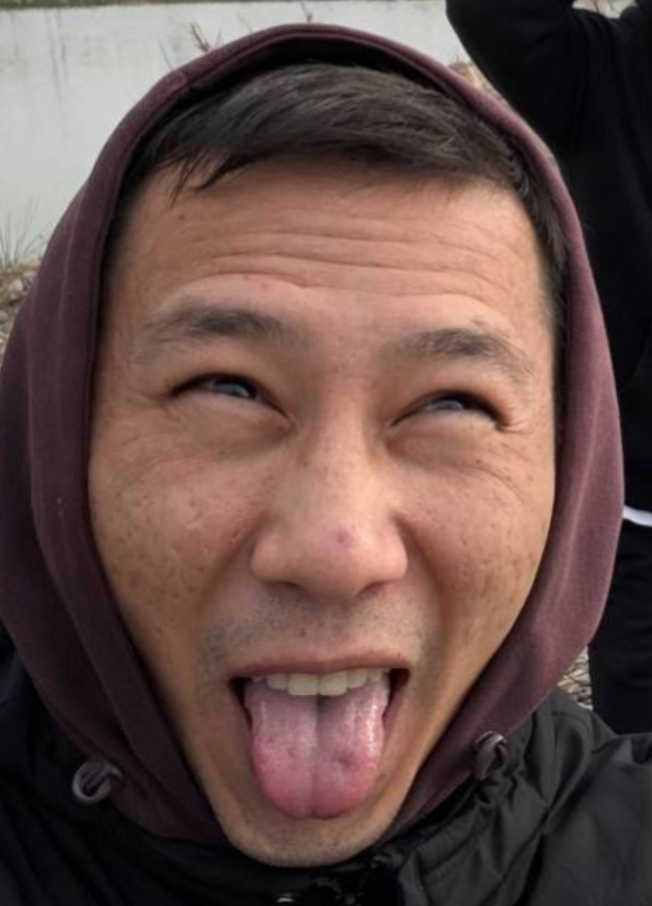
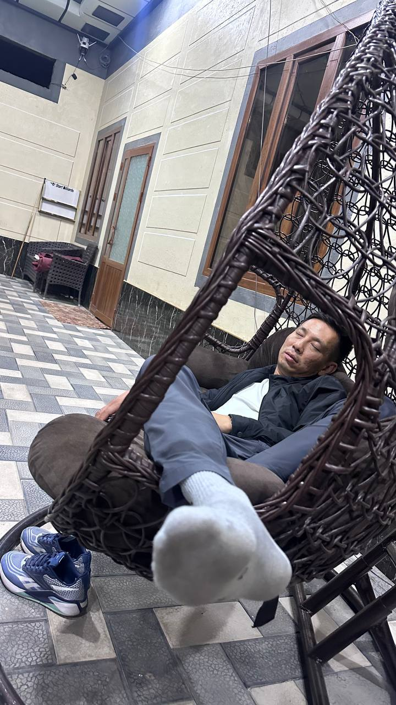
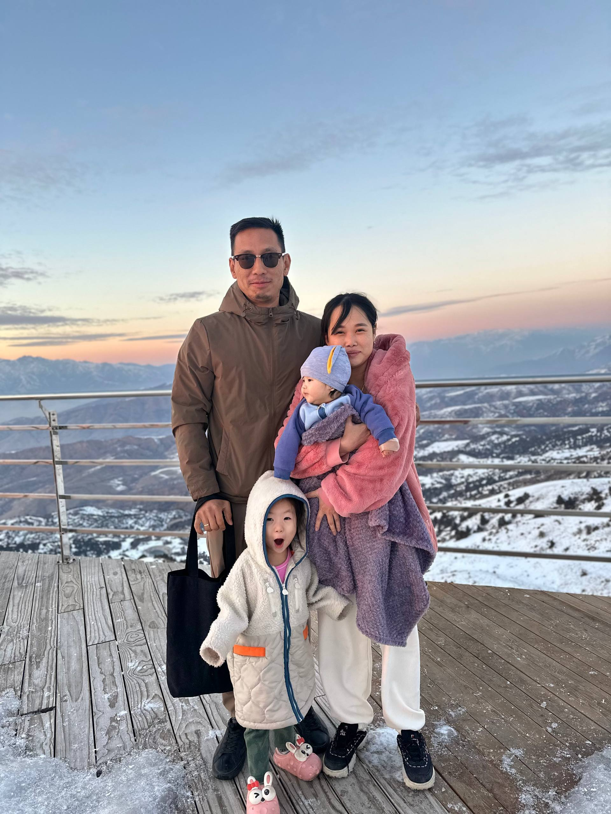

Руслан Маск — директор компании по производству сумок, который в какой-то момент решил, что будущее за технологиями. С тех пор в его жизни появились IT, новые идеи и планы мирового масштаба. Именно поэтому обычный Руслан постепенно превратился в Руслана Маска.
Возраст Руслана остаётся предметом научных споров. По одним данным ему около 35–36 лет. По другим данным, полученным непосредственно от Руслана, ему 18. Сам Руслан придерживается второй версии и менять её не собирается.

В обычной жизни Руслан производит впечатление серьёзного человека, но это впечатление может быть обманчивым. Друзья давно подозревают, что ему нужен психолог, однако пока что психологу, возможно, нужен Руслан.
Особую осторожность рекомендуется соблюдать в моменты плохого настроения. По неподтверждённым данным, уровень его злости способен представлять опасность для ближайших дверей, мебели и спокойствия окружающих.

Руслан — счастливый муж, отец двух дочерей и человек, который может одновременно интересоваться технологиями будущего и переживать за совершенно незнакомого человека на улице. Если кто-то нуждается в помощи, шансы пройти мимо у Руслана примерно такие же, как шансы убедить его, что ему не 18 лет.
Поэтому за образом «Руслана Маска» скрывается вполне хороший человек. Хотя в минуты особенно плохого настроения двери предпочитают лишний раз не привлекать к себе внимание.